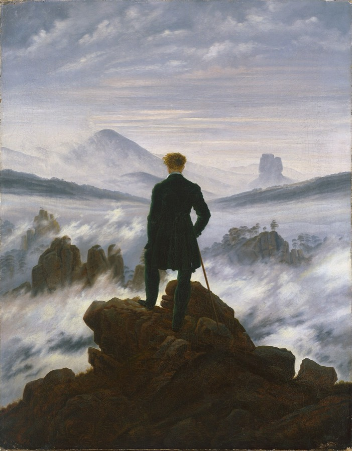

Et si tu choisissais la musique d'un film ?
Ici, tu vas d'abord créer une image qui raconte une émotion. Puis tu vas écouter 50 musiques mystères — sans titre, sans nom — et t'arrêter sur celle qui va parfaitement avec ton image. Aucune bonne ou mauvaise réponse : seule ton oreille décide.
Une même image change d'histoire selon la musique.
Tu fabriques ton image de 30 à 60 secondes.
Tu explores les 50 musiques mystères.
Tu gardes 2 finalistes, puis tu tranches.
Tu racontes pourquoi cette musique.
Séance 1 Une image, trois musiques
Regarde bien cette image, puis écoute 3 musiques classiques : laquelle lui va le mieux, selon toi ?

Séance 2 Fabrique ton image
Crée une image en mouvement de 30 à 60 secondes qui exprime une émotion — mais sans musique pour l'instant.
🎬 Dépose ta création ici
Choisis la vidéo (ou l'image) que tu as fabriquée. Elle reste sur ton appareil.
Utile si ta création est déjà en ligne (extrait de film, montage…).
Séance 3 La chasse à la musique
Voici les 50 musiques mystères. Écoute, imagine-les sur ton image. Mets un ♡ à celles qui te touchent, garde 2 finalistes ⭐, puis choisis ta musique 🏆.
🎛️ Mode prof — importer les musiques
Glisse tes fichiers audio ci-dessous. Nomme-les de préférence par code
(ex. A1 – Barber.mp3) pour un classement automatique — sinon, corrige le code à la main.
Les musiques jouent aussitôt sur cet ordinateur. Pour que tous les élèves les entendent,
télécharge le paquet et pousse-le dans le dépôt (dossier audio/).
Séances 4 & 5 Pourquoi cette musique ?
Remplis ta fiche. Tu la présenteras à la classe et tu en discuteras avec ton professeur.
J'ai choisi la musique —
💬 Les questions dont on parlera ensemble
- Qu'est-ce qui change dans ton image quand la musique arrive ?
- À quel moment précis ressens-tu l'effet le plus fort ?
- Ta musique rend l'image plus triste, plus violente, plus douce que prévu ?
- Qu'est-ce que la musique ajoute que l'image seule ne disait pas ?
- Ton finaliste écarté : pourquoi ne collait-il pas ?
- Et si on mettait une musique contraire : ton image mentirait-elle ?
✔ Tout est sauvegardé automatiquement dans ce navigateur.